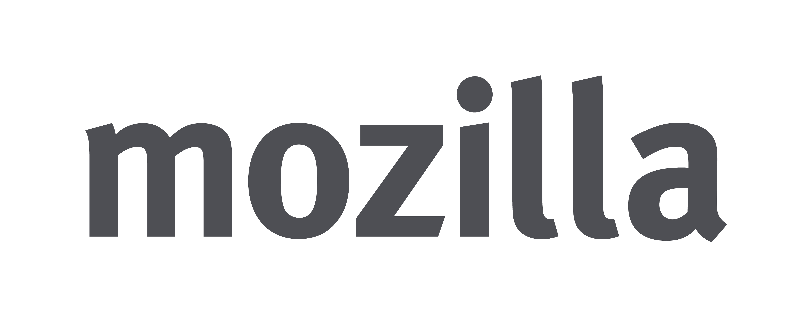
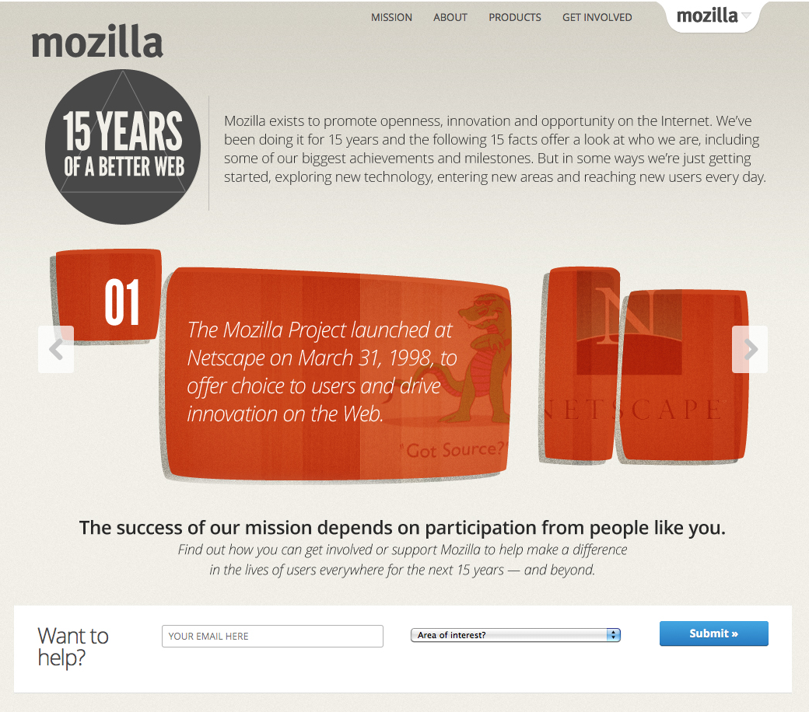
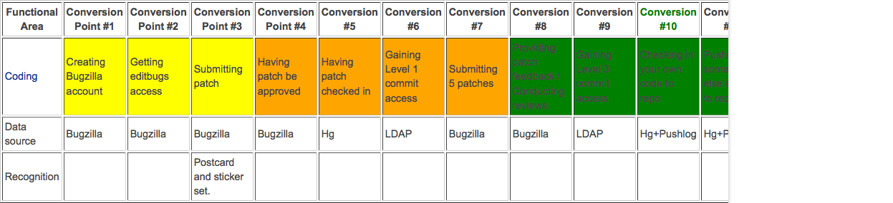
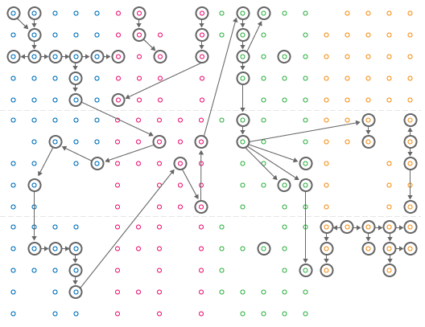
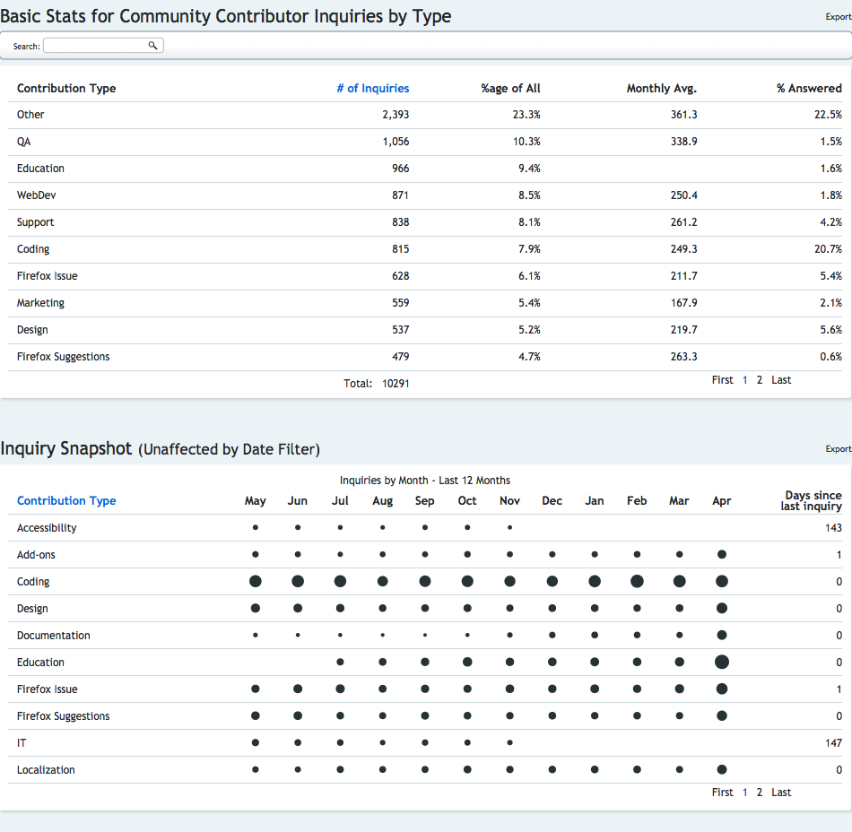
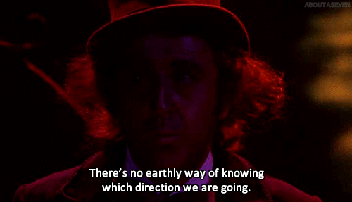

MozCafe Johor Bahru 2014, Mariner Cafe, Johor Bahru 15/03/2014
Mozilla Malaysia Community


All communities
- Project pages, e.g. SUMO
- Events
- Get Involved page (/contribute)
- Local community sites
- Word of mouth, emails, donation drives, ...
Contribute Page - 2 Funnels
- By functional area
- By locale

- Coding
- l10n
- Marketing
- Communications / PR
- Documentation
- Community Building
- Webmaker
- And many more...


Read the full post

arewegrowingyet.com
The web ride is far from over!
